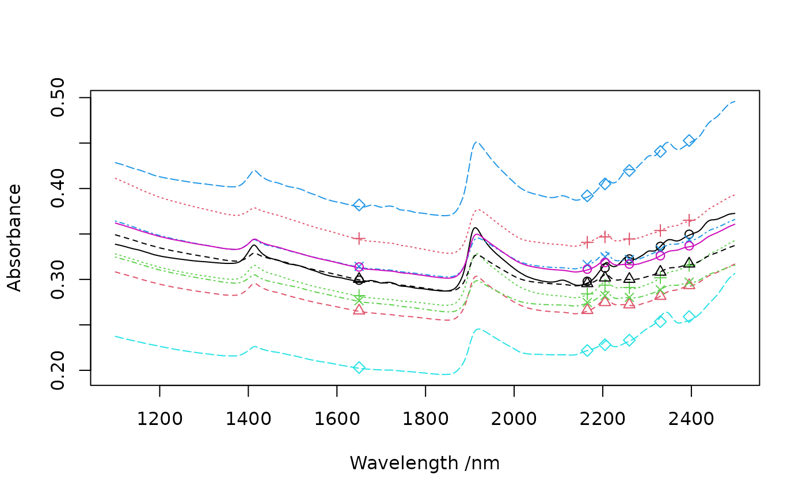

R/resample2.R
resample2.RdResample a data matrix or vector to match the response of another instrument using full width half maximum (FWHM) values
resample2(X, wav, new.wav, fwhm)a numeric matrix or vector to resample (optionally a data frame that can be coerced to a numerical matrix).
a numeric vector giving the original band positions.
a numeric vector giving the new band positions.
a numeric vector giving the full width half maximums of the new band positions. If no value is specified, it is assumed that the fwhm is equal to the sampling interval (i.e. band spacing). If only one value is specified, the fwhm is assumed to be constant over the spectral range.
a matrix or vector with resampled values
The function uses gaussian models defined by fwhm values to resample the high resolution data to new band positions and resolution. It assumes that band spacing and fwhm of the input data is constant over the spectral range. The interpolated values are set to 0 if input data fall outside by 3 standard deviations of the gaussian densities defined by fwhm.
data(NIRsoil)
wav <- as.numeric(colnames(NIRsoil$spc))
# Plot 10 first spectra
matplot(wav, t(NIRsoil$spc[1:10, ]),
type = "l", xlab = "Wavelength /nm",
ylab = "Absorbance"
)
# ASTER SWIR bands (nm)
new_wav <- c(1650, 2165, 2205, 2260, 2330, 2395) # positions
fwhm <- c(100, 40, 40, 50, 70, 70) # fwhm's
# Resample NIRsoil to ASTER band positions
aster <- resample2(NIRsoil$spc, wav, new_wav, fwhm)
matpoints(as.numeric(colnames(aster)), t(aster[1:10, ]), pch = 1:5)
